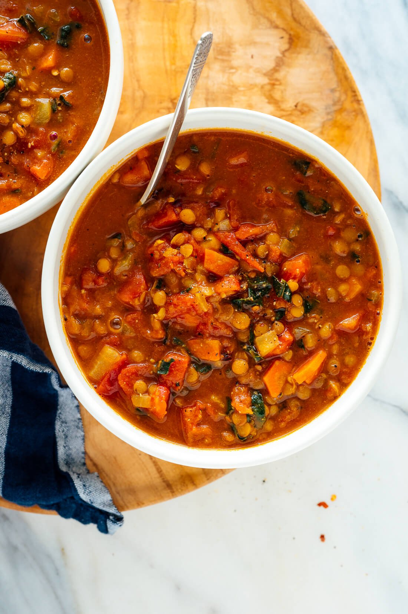

The World's Best Lentil Soup

This soup recipe was a long time coming!
Over the years, I made some lackluster lentil soups that never saw the light of day on this
website. No
vegetarian food blog would be complete without a proper lentil soup, though, so I perfected one of my own. Here
it is. My lentil soup is made with mostly pantry ingredients but includes hearty greens and a squeeze of lemon
for bright, fresh flavor. It’s seasoned with a few of my favorite spices and plenty of freshly ground black
pepper. Honestly, it’s the best lentil soup I’ve ever had.
Ingredients in the world's best lentil soup:
This simple vegan lentil soup recipe comes together quickly with mostly pantry ingredients. Be sure to have your
ingredients prepped and ready before you start cooking! Recipe yields four large bowls of soup, or six more
modest servings.
- 1/4 cup extra virgin olive oil
- 1 medium yellow or white onion, chopped
- 2 carrots, peeled and chopped
- 4 garlic cloves, pressed or minced
- 2 teaspoons ground cumin
- 1 teaspoon curry powder
- 1/2 teaspoon dried thyme
- 1 large can (28 ounces) diced tomatoes, lightly drained
- 1 cup brown or green lentils, picked over and rinsed
- 4 cups vegetable broth
- 2 cups water
- 1 teaspoon salt, more to taste
- Pinch of red pepper flakes
- Freshly ground black pepper, to taste
- 1 cup chopped fresh collard greens or kale, tough ribs removed
- 1 to 2 tablespoons lemon juice (½ to 1 medium lemon), to taste
Instructions:
- Warm the olive oil in a large Dutch oven or pot over medium heat. One-fourth cup olive oil may seem like a
lot, but it adds a lovely richness and heartiness to this nutritious soup.
- Once the oil is shimmering, add the chopped onion and carrot and cook, stirring often, until the onion has
softened and is turning translucent, about 5 minutes.
- Add the garlic, cumin, curry powder and thyme. Cook until fragrant while stirring constantly, about 30
seconds. Pour in the drained diced tomatoes and cook for a few more minutes, stirring often, in order to
enhance their flavor.
- Pour in the lentils, broth and the water. Add 1 teaspoon salt and a pinch of red pepper flakes. Season
generously with freshly ground black pepper. Raise heat and bring the mixture to a boil, then partially
cover the pot and reduce the heat to maintain a gentle simmer. Cook for 25 to 30 minutes, or until the
lentils are tender but still hold their shape.
- Transfer 2 cups of the soup to a blender. Securely fasten the lid, protect your hand from steam with a tea
towel placed over the lid, and purée the soup until smooth. Pour the puréed soup back into the pot. (Or, use
an immersion blender to blend a portion of the soup.)
- Add the chopped greens and cook for 5 more minutes, or until the greens have softened to your liking. Remove
the pot from the heat and stir in 1 tablespoon of lemon juice. Taste and season with more salt, pepper
and/or lemon juice until the flavors really sing. For spicier soup, add another pinch or two of red pepper
flakes.
- Serve while hot. Leftovers will keep well for about 4 days in the refrigerator, or can be frozen for several
months (just defrost before serving).
Nutrition Information
The information shown is an estimate provided by an online nutrition calculator. It should not be considered
a substitute for a professional nutritionist’s advice.
Recipe Source -
Cookie and Kate